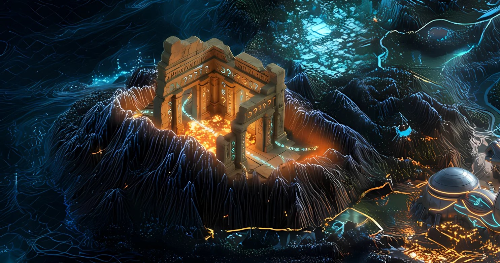

Record // AIRDROP
TEMPLE OF "WHEN?"

'wen' — the word Solana asked a thousand times — finally became a real airdrop.
What happened
In late January 2024, WEN became the first token launched through Jupiter's LFG Launchpad, used as a public test run days before Jupiter's own JUP airdrop. Its one-trillion supply was fractionalized from a single NFT — a poem written for the community members who perpetually asked 'wen token?'. Claims opened January 26, 2024, with 70% of supply airdropped across more than a million eligible wallets, including past Jupiter users and Saga owners.
Why Solana remembers it
WEN turned a piece of crypto vernacular — 'wen,' the community's running cry of anticipation — into a documented culture moment, and demonstrated Jupiter's launchpad mechanics at scale before its flagship token went live.
On the map
A temple of echoes where one endlessly repeated question is finally carved into stone.
Evidence
Historical reference only. Documented as culture, not investment.